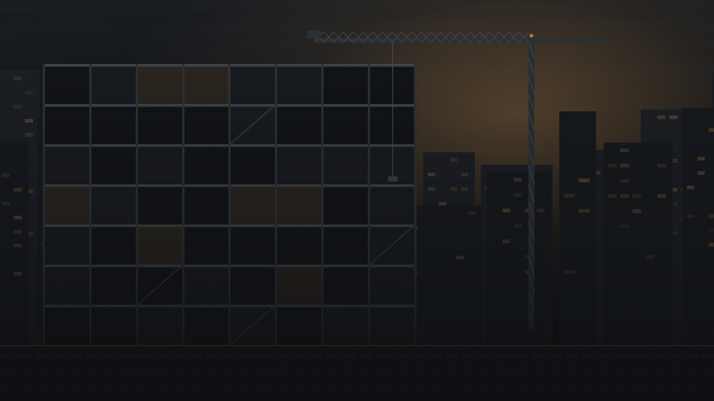

01
Entrepreneur général
Prise en charge et coordination de projets de construction et de rénovation.
En savoir plus
Entrepreneur général au Québec
Construction AVQ inc. est votre partenaire pour la construction, la rénovation, le carrelage et la gestion de chantier au Québec.
Prise en charge et coordination de projets de construction et de rénovation.
En savoir plusPose de carrelage avec une attention particulière portée aux détails, aux finitions et à la qualité d’exécution.
En savoir plusPlanification, coordination des intervenants, suivi des travaux, échéanciers et contrôle de l’avancement du projet.
En savoir plusNotre expertise
« Chez Construction AVQ inc., nous croyons qu’un projet réussi repose autant sur la qualité des travaux que sur une gestion rigoureuse du chantier. Notre approche combine expertise technique, coordination des métiers et suivi attentif de chaque étape du projet. »
Beaucoup d’entreprises exécutent. Peu prennent le temps de structurer le chantier avant qu’il ne commence. C’est cette double capacité — la main et la méthode — qui définit notre façon de travailler.

Séquence des travaux, jalons et préparation des interventions avant la première journée de chantier.
Mise en relation des corps de métier et des sous-traitants pour éviter les temps morts.
Réalisation des travaux selon les plans, les devis et les règles de l’art.
Vérifications aux étapes clés, avant que les surfaces ne soient refermées.
Suivi du calendrier, anticipation des délais de matériaux et ajustements en cours de route.
Présence, comptes rendus et communication continue avec le client.

Spécialité
Céramique, porcelaine, mosaïque, grands formats : la pose de carrelage ne pardonne pas l’approximation. C’est un métier où la préparation compte autant que la pose.
Notre processus
Un cadre clair, appliqué à tous les projets, quelle que soit leur envergure.
Comprendre les besoins et les objectifs du client.
Analyser le projet, les travaux nécessaires et les contraintes.
Déterminer les étapes, les intervenants et l’organisation du chantier.
Réaliser ou coordonner les travaux selon le projet.
Assurer le suivi de l’avancement et de la qualité.
Finaliser le projet et effectuer les dernières vérifications.
Pourquoi Construction AVQ
Nous ne cherchons pas à être partout : nous cherchons à être précis là où ça compte. Notre valeur ajoutée tient à la façon dont un projet est préparé, coordonné et suivi, autant qu’à la qualité du travail livré.
Chaque étape du projet est planifiée et suivie avec attention.
Une attention particulière est accordée à la qualité des matériaux, de l’exécution et des finitions.
Une bonne coordination permet de maintenir un chantier efficace.
Communication claire avec le client tout au long du projet.
Une expertise combinant carrelage, construction, rénovation et gestion de chantier.

Parlons de votre projet
Que vous planifiiez une rénovation, un projet de construction, des travaux de carrelage ou que vous ayez besoin d’une gestion efficace de votre chantier, Construction AVQ inc. est là pour vous accompagner.